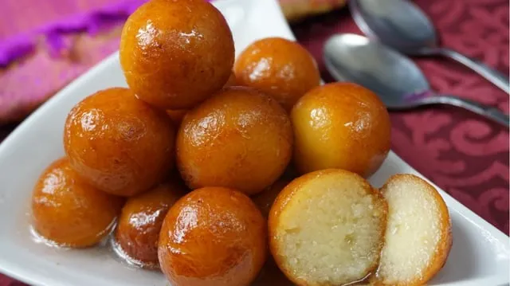
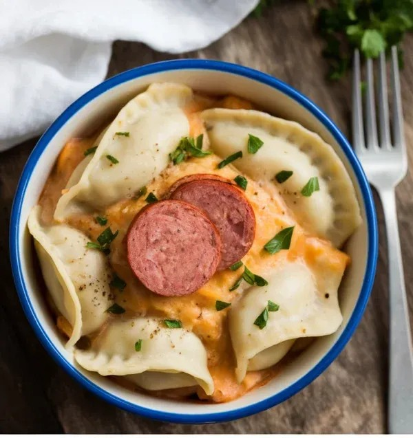

Gulab Jamun
Recipe
- Syrup: Boil sugar, water, cardamom for 5–7 mins. Add rose water, keep warm..
- Dough: Mix dry ingredients, add ghee, then milk to form soft dough. Rest 10 mins.
- Shape: Make smooth, crack-free balls.
- Fry: Deep fry on low-medium heat until golden brown.
- Soak: Add to warm syrup. Let soak 1–2 hours.

Barfi Jamun
Recipe
- Make Sugar Syrup: Boil sugar + water + cardamom for 5–7 mins. Add rose water.
- Prepare Dough: Mix milk powder, maida, baking soda, ghee, then milk. Knead soft dough. Rest 10 mins.
- Make Barfi: Mix khoya, sugar, cardamom. Cook slightly. Let it cool
- Soak: Add to warm syrup and soak for 1 hour.
